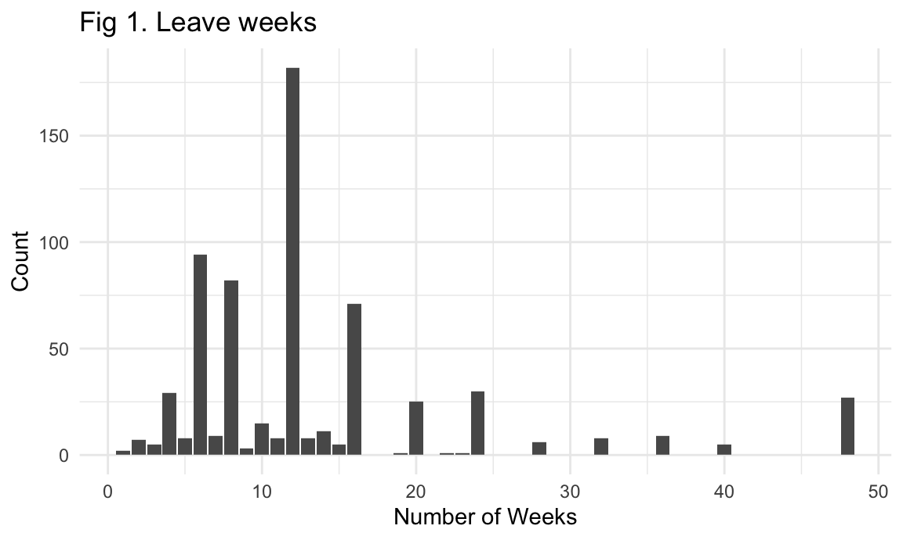
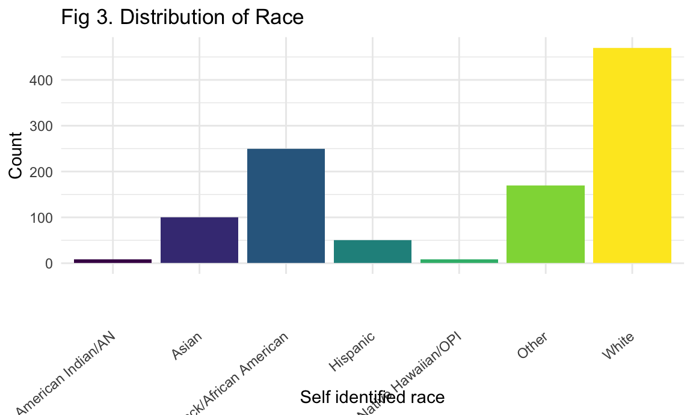

Project Report
Questions
Our goal was to explore the racial, economic, and geographic factors related to parental leave in New York City. Our questions are:
How does length of maternity leave taken by women in New York City vary according to key sociodemographic characteristics?
How does length of maternity leave differ by zip code? Do these spacial patterns match the distribution of key sociodemographic characteristics?
Is the geographic distribution of average length of maternity leave associated with job type, co-parenting status, education, race, income, and/or borough?
Data
Our data were taken from the New York City Work and Family Leave Survey (WFLS). The telephone survey was conducted in March 2016 to collect information on the availability and accessibility of paid family leave among working parents. The WFLS also sought to describe the role that paid family leave policies play in achieving health equity for parents and children. The baseline findings from this survey can be found in the Paid Family Leave Report.
We obtained the data from the NYC Open Data. From here, we exported the data as a csv file. The raw dataset contained 1063 rows, and 153 columns. We created new variables based on data dictionary with descriptive names and responses, rather than the numeric responses in the original csv file. We then merged the cleaned data with a NYC zipcode shape file (available in the “maps” folder on our project GitHub.
Our cleaned data consists of 1,063 rows and 20 columns. It includes information on the variables below.
Data Cleaning
Step 1
Tidying Data and Creating Relevant Variables

wfls_df =
read_csv("./data/WFLS_2014.csv") %>%
mutate(
recode_el12mns = el12mns*4,
el11 = as.character(el11),
leave_type = case_when(
el11 == '1' ~ "Paid",
el11 == '2' ~ "Unpaid",
el11 == '3' ~ "Both",
el11 == '4' ~ "Did not take time off"),
leave_weeks = coalesce(recode_el12mns, el12wks),
leave_weeks = na_if(leave_weeks, 77),
leave_weeks = na_if(leave_weeks, 99),
ulw_recode = case_when(
leave_type == "Unpaid" ~ leave_weeks),
unpaid_leave_weeks = coalesce(ulw_recode, el13d),
pct_unpaid = round((unpaid_leave_weeks/leave_weeks)*100),
partner = case_when(
cp1 == '1' ~ "Co-parent",
cp1 == '2' ~ "Single Parent"),
education = case_when(
d7 == '1' ~ "No high school degree",
d7 == '2' ~ "No high school degree",
d7 == '3' ~ "No high school degree",
d7 == '4' ~ "High school degree/GED",
d7 == '5' ~ "Some college or technical school",
d7 == '6' ~ "Four year college or higher"),
d4_2 = na_if(d4_2, 77),
d4_2 = na_if(d4_2, 99),
race = case_when(
d4_1 == '1' ~ "White",
d4_1 == '2' ~ "Black/African American",
d4_1 == '3' ~ "Asian",
d4_1 == '4' ~ "Native Hawaiian/OPI",
d4_1 == '5' ~ "American Indian/AN",
d4_1 == '8' ~ "Other",
d4_2 >= 1 ~ "Multiple",
d3 == 1 ~ "Hispanic"),
job_type = case_when(
el3 == '1' ~ "Government",
el3 == '2' ~ "Private",
el3 == '3' ~ "Non-profit",
el3 == '4' ~ "Self-employed"),
unemploy_reason = el16,
unemploy_reason = case_when(
el16 == '1' ~ "Fired related to pregnancy or maternity leave",
el16 == '2' ~ "Chose to stay-at-home",
el16 == '3' ~ "Not enough flexibility",
el16 == '4' ~ "No affordable childcare",
el16 == '5' ~ "My health issues",
el16 == '6' ~ "Baby's health issues",
el16 == '7' ~ "Currently a student",
el16 == '8' ~ "Can't find work",
el16 == '9' ~ "Looking for other jobs",
el16 == '10' ~ "other") ,
bf1_1 = case_when(
bf1_1 == '1' ~ "Never",
bf1_1 == '2' ~ "Less than 1 Week",
bf1_1 == '3' ~ "Weeks",
bf1_1 == '4' ~ "Months",
bf1_1 == '5' ~ "Still breastfeeding",
bf1_1 == '77' ~ "don't know",
bf1_1 == '99' ~ "refused"),
food_insecurity = case_when(
es2 == 1 ~ 1,
es1a == 1 ~ 1,
es1a == 2 ~ 1,
es1a == 3 ~ 1,
es2 == 0 ~ 0,
es1a == 4 ~ 0
),
family_income = case_when(
es3 == '1' ~ "$16,000 or less",
es3 == '2' ~ "$16,001 to $20,000",
es3 == '3' ~ "$20,001 to 40,000",
es3 == '4' ~ "$20,001 to 40,000",
es3 == '5' ~ "$20,001 to 40,000",
es3 == '6' ~ "$20,001 to 40,000",
es3 == '7' ~ "$40,001 to 60,000",
es3 == '8' ~ "$40,001 to 60,000",
es3 == '9' ~ "$40,001 to 60,000",
es3 == '10' ~ "$60,001 to 85,000",
es3 == '11' ~ "$60,001 to 85,000",
es3 == '12' ~ "$85,000 or more"),
zipcode = fixd2) %>%
select("ph1":"el1", "el9", "el11", "el13a":"el17f", "ih1", "mh4", "es1a": "es3", "SAMP_WEIGHT", "POP_WEIGHT", "leave_type":"pct_unpaid", "partner":"zipcode", "d4_2", "unemploy_reason", "bf1_1", "d7", "d4_1", "cp1", "el3")
wfls_df =
wfls_df %>%
mutate(
race_num = race,
postpartum_check = case_when(
pph1 == '1' ~ "yes",
pph1 == '2' ~ "no"),
mean_leave_weeks = mean(leave_weeks)) %>%
select("ph1":"el1", "el9", "el11", "el13a":"el17f", "ih1", "mh4", "es1a": "es3", "SAMP_WEIGHT", "POP_WEIGHT", "leave_type":"pct_unpaid", "partner":"zipcode", "postpartum_check", "d7") %>%
select("ph1":"el1", "el9", "el11", "el13a":"el17f", "ih1", "mh4", "es1a":"es3", "SAMP_WEIGHT", "POP_WEIGHT", "leave_type":"pct_unpaid", "partner":"zipcode", "postpartum_check", "d7") %>%
select("es3", "SAMP_WEIGHT", "POP_WEIGHT", "leave_type":"zipcode","postpartum_check", "d7")Step 2
Save cleaned data set and merge with NYC Zipcodes Data
write.csv(wfls_df, "./data/cleaned_wfls.csv")Step 3
Final Merge of All Relevant Datasets

cleaned_wfls =
read_csv("./data/cleaned_wfls.csv")
zipcodes =
read_xlsx("./data/zip_codes.xlsx") %>%
mutate(zipcode = as.character(zipcode))
merged_wfls =
left_join(cleaned_wfls, zipcodes, by = "zipcode")
write.csv(merged_wfls, "./data/merged_wfls.csv")Variables of interest
Outcomes
leave_type= type of maternity leave (paid, unpaid, combination of paid and unpaid, or did not take leave)leave_weeks= weeks of maternity leavepaid_leave_weeks= weeks of paid maternity leaveunpaid_leave_weeks= weeks of unpaid maternity leavepostpartum_check= had a postpartum checkup 4-6 weeks after giving birth
Predictors
borough= NYC borough (based on five digit zip code)neighborhood= neighborhood (based on five digit zip code)race= race of survey respondentfamily_income= household family incomefood_insecurity= was concerned about having enough food to feed one’s family or self in the past 30 days or received public assistance in the form of SNAP benefits / food stamps during pregnancy or in the two years prior to the surveyeducation= highest level of school completedpartner= co-parenting status (single or co-parent)employment_type= type of employment during pregnancy (government, private company, non-profit, self-employed)
Descriptive Analysis
We first wanted to examine the distribution of some of our key variables. This helped us better understand the sample.
Length of Leave
leave_weeks =
merged_wfls %>%
drop_na(leave_weeks) %>%
ggplot(aes(x = leave_weeks)) + geom_bar() +
labs(
title = "Fig 1. Leave weeks",
x = "Number of Weeks",
y = "Count")
leave_weeks
unpaid_leave_weeks =
merged_wfls %>%
drop_na(unpaid_leave_weeks) %>%
ggplot(aes(x = unpaid_leave_weeks)) + geom_bar() +
labs(
title = "Fig 2. Unpaid leave weeks",
x = "Number of Weeks",
y = "Count")
unpaid_leave_weeksFigure 1 shows the spread of total leave weeks. The most common value was 12 weeks. The spread of time of leave is more likely to be under 12 weeks. Figure 2 illustrates that over 200 mothers did not take unpaid leave time. We were particularly interested understanding the demographics and geographic clustering of the 447 mothers who reported taking unpaid leave, as doing so represents a substantial loss of income for many families.
Race, Education, and Income
race =
merged_wfls %>%
drop_na(race) %>%
ggplot(aes(x = race, fill = race)) + geom_bar() +
theme(axis.text.x = element_text(angle = 40, vjust = 0.5, hjust = 1), legend.position = "none") +
labs(
title = "Fig 3. Distribution of Race",
x = "Self identified race",
y = "Count")
race
education =
merged_wfls %>%
drop_na(education) %>%
mutate(education = fct_reorder(education, d7)) %>%
ggplot(aes(x = education, fill = education)) + geom_bar() +
theme(axis.text.x = element_text(angle = 40, vjust = 0.5, hjust = 1), legend.position = "none") +
labs(
title = "Fig 4. Distribution of education",
x = "education level",
y = "Count")
educationincome =
merged_wfls %>%
drop_na(family_income) %>%
ggplot(aes(x = family_income, fill = family_income)) + geom_bar() +
theme(axis.text.x = element_text(angle = 40, vjust = 0.5, hjust = 1), legend.position = "none") +
labs(
title = "Fig 5. Distribution of income",
x = "income level",
y = "Count")
incomeFigure 3 illustrates that white mothers were over represented in this sample. Figure 4 illustrates that mothers with a four year college degree or higher had higher representation in this data. Figure 5 shows that those in households of 85,000 dollars or more were most sampled. However, a limitation of this categorization is that there may be a lot of heterogeneity in the highest income category, especially in an expensive city like New York.
Exploratory Analysis
After getting a sense of the distribution across key variables, our exploratory analysis aimed to examine how the length of leave varied by sociodemographic characteristics. We looked at paid and total length of leave by race, leave by parenting status, leave by job type, and leave by income. We also looked at reasons for unemployment across race and education. Lastly, we examined postpartum checkup status by income. You can find that analysis here.
To allow website visitors to see how leave varies according to neighborhood in NYC and by the sociodemographic characteristics they care about most, we created an interactive tool.
We also wanted to incorporate geography by neighborhood. To see how sociodemographic characteristics vary by neighborhood, see our Leaflet Map tab.
Spatial Analysis and Regression
We ran a Univariate Local Moran’s I test to look for spatial clusters of high and low unpaid leave weeks. It looks for clusters in the same zipcode and surrounding zipcodes and identifies places where length of leave is low within a zip code but high within neighboring zip codes, and vice versa. Since the Moran’s I statistic was 0.055 and had a p-value = 0.2131, we could not move forward with a spacial analysis since there were no significant spatial clusters.
After conducting this spatial analysis, we also ran a linear regression including a number of important covariates identified in our exploratory analyses. These covariates included job type, whether the parent had a partner, the number of weeks of leave they took total, the level of education they attained, and their race, income, and borough. The outcome was the number of weeks of unpaid leave they took. View this analysis here.
Discussion
Our exploratory analysis did not find substantial differences of total or unpaid leave by race, parenting status, or income. However, one interesting finding from our exploratory analysis was that white mothers and mothers with a four year college degree or higher were most likely to choose to stay at home. This highlights inequalities in maternity leave, as those who are more privileged in society were more likely to choose to stay out of the workforce.
Given these findings, we wanted to better understand the role geography plays in type and length of maternity leave across sociodemographic characteristics. Overall, these maps suggested that type of maternity leave, length of unpaid leave, and sociodemographic characteristics are clustered geographically in New York City. However a formal spacial analysis did not reveal significant spacial clusters. We then ran a linear regression model which included job type, co parenting status, total leave weeks, education, income, race, and borough. The only significant predictor of unpaid leave weeks was total paid leave weeks. This accounted for 64.35% of the relationship. This was also surprising, as we were expecting to see greater differences between sociodemographic groups.
Limitations
As a whole, we were surprised with the lack of significant findings and spatial clusters. We believe this may be related to the limited participation of women of racial minorities and low income groups. Among all participants, 470 were white and 337 participants were non white. In addition, many women did not provide complete information across questions, resulting in a large number of “NA” responses. The way income categories were created may also have contributed to our lack of significant findings. The highest income category was a family income of greater than 80,000, which may mask heterogeneity as the median family income in New York City is $63,799, according to the U.S. Census.
Our project concept changed throughout this process. We attempted to build a tool in Shiny to reveal the average length of leave taken by women with a series of user specified characteristics, but soon realized that we did not have enough data points to obtain this. In addition, data were missing for some neighborhoods included in the final shiny tool.
Lastly, an important limitation to note is that paternal and maternal leave are both important components of economic stability within families, yet we only had information on people who identified as both women and mothers.
Next Steps
We believe that this project will be useful for creating a baseline that future analyses can use to assess the impact of New York’s Paid Family Leave Law. These results may also be useful in understanding leave patterns in other cities with geographical disparities.
Akanksha Nalatwad (asn2139), Amanda Warnock (aw2351), Meghan Bellerose (meb2308), Karina Myers (km3529)
Visualizations and analyses performed using R (v3.6.1) and RStudio (v1.2.1335).
Additional interactivity added using plotly (v4.9.0) and Shiny (v1.3.2).
2020